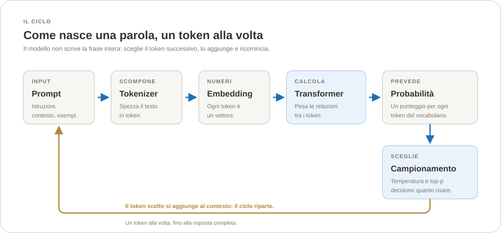

Sezione · Informatica
Intelligenza artificiale
L’AI non è una scatola magica né un singolo prodotto: è un insieme di tecniche, dati e macchine. Questa introduzione mette in fila le parole che senti ovunque, spiega come funziona un modello linguistico, come si addestra, quanta energia consuma e dove conviene usarlo. Senza matematica, ma senza scorciatoie.
Che cos’è l’AI, davvero
L’intelligenza artificiale è l’insieme delle tecniche con cui un computer svolge compiti che, se li facesse una persona, chiameremmo “intelligenti”: capire una frase, riconoscere un’immagine, tradurre, giocare a scacchi, scrivere codice. Il termine nasce nel 1956 alla conferenza di Dartmouth, ma solo negli ultimi quindici anni le macchine hanno cominciato a fare queste cose in modo abbastanza affidabile da sembrare naturali.
La definizione più utile per chi inizia è però un’altra: l’AI è un programma che impara una funzione dagli esempi, invece di ricevere regole scritte a mano. Un sistema tradizionale segue istruzioni esplicite (“se il totale supera 100, applica lo sconto”). Un sistema di machine learning riceve migliaia di esempi e trova da solo la regola che li spiega. È un cambio di metodo, prima ancora che di potenza.
Da qui discendono tre conseguenze che tornano in tutta la sezione. Primo: il comportamento dipende dai dati, non solo dal codice. Secondo: il sistema generalizza, cioè risponde anche a casi che non ha mai visto — ed è proprio lì che nascono gli errori interessanti. Terzo: non esiste un’unica “AI”, ma una famiglia di approcci, con obiettivi e limiti diversi.
Cosa non è
- Non è cosciente. Un modello linguistico non ha esperienze, intenzioni o desideri. Produce testo statisticamente plausibile, non pensieri.
- Non è una banca dati. Non “cerca” la risposta in un archivio: la ricostruisce, e può sbagliare con sicurezza.
- Non è infallibile. Anzi: più un compito è raro o verificabile, più è facile che il modello inventi.
- Non è magia né una singola azienda. Dietro ci sono matematica, dati, hardware e molto lavoro umano di selezione e correzione.
La mappa delle parole
AI, machine learning, deep learning, rete neurale, modello generativo, LLM: le parole si sovrappongono e i titoli le usano quasi come sinonimi. Non lo sono. La figura qui sotto mostra la gerarchia; il testo la spiega.
Intelligenza artificiale è il contenitore più grande: comprende sia l’AI simbolica (regole, ricerca, pianificazione, sistemi esperti) sia l’apprendimento automatico. L’AI simbolica ha dominato fino agli anni Ottanta e resta utile dove le regole sono chiare e verificabili: un configuratore, un pianificatore, un motore di ricerca.
Machine learning è il sottoinsieme che impara dai dati. Invece di scrivere la regola, si sceglie un modello con parametri regolabili e si lasciano aggiustare dagli esempi. È la definizione di Tom Mitchell, 1997: un programma impara se migliora con l’esperienza su un compito, misurato da una metrica. È una definizione operativa, non filosofica: se la metrica migliora, ha imparato qualcosa.
Deep learning è il machine learning fatto con reti neurali profonde, cioè con molti strati di trasformazioni. Ogni strato impara rappresentazioni via via più astratte: bordi, forme, oggetti; lettere, parole, frasi. Il boom moderno parte dal 2012, quando una rete profonda vinse ImageNet, e si consolida nel 2017 con il transformer.
AI generativa è la parte che produce contenuti nuovi — testo, immagini, audio, video, codice — invece di limitarsi a classificare o prevedere un valore. È addestrata a imitare la distribuzione dei dati: impara cioè che è probabile, non ciò che è vero.
LLM (large language model) è un modello generativo per il testo, con molti parametri e addestrato su grandi quantità di testo. “Grande” non ha una soglia ufficiale: oggi si parla di miliardi o trilioni di parametri, ma la dimensione da sola non dice quanto un modello sia utile. Un foundation model è un modello grande e generale, pre-addestrato su dati vasti e poi adattato a molti compiti. Multimodale significa che accetta o produce più tipi di dato: testo e immagini, per esempio, o audio e video.
Come funziona un modello linguistico
Un modello linguistico non legge lettere e non ragiona su parole intere.
Lavora su token: pezzi di testo che possono essere una
parola, una parte di parola, un segno di punteggiatura o un byte. La
frase “incredibile” può diventare in +
cred + ibile. Il modello vede numeri, non
lettere.
Il tokenizer è il programma che spezza il testo in token e li mappa su un vocabolario. La tecnica più diffusa è la byte-pair encoding (BPE): si parte dai caratteri e si fondono ripetutamente le coppie più frequenti, fino a ottenere un vocabolario di decine o centinaia di migliaia di unità. Le lingue e i domini meno rappresentati nel vocabolario costano più token per lo stesso testo: è uno dei motivi per cui i prezzi e i limiti non sono identici in ogni lingua.
Ogni token viene trasformato in un embedding: un vettore di numeri, spesso di centinaia o migliaia di dimensioni. Token con significati simili finiscono vicini in questo spazio. È qui che nasce la sfumatura: “gatto” e “felino” sono punti vicini, “gatto” e “bilancio” sono lontani. La posizione nella frase viene aggiunta con un altro segnale, perché l’ordine conta.
Il cuore del modello è il transformer, l’architettura presentata nel 2017 nel paper Attention Is All You Need. Il meccanismo di attenzione permette a ogni token di guardare tutti gli altri token del contesto e di pesare le relazioni: chi è il soggetto, a cosa si riferisce un pronome, quale parola chiarisce un aggettivo. Più strati di attenzione e di trasformazioni si impilano, e ogni strato costruisce una rappresentazione più ricca.
L’obiettivo dell’addestramento è semplice da enunciare: prevedere il prossimo token. Dato un testo, il modello produce una probabilità per ogni token del vocabolario; si sceglie un token, lo si aggiunge al testo e si ripete. Da questa ripetizione nascono frasi, risposte, codice e ragionamenti. Non c’è un piano nascosto: c’è una distribuzione di probabilità molto ben calibrata.

Parametri, contesto, temperatura
I parametri sono i numeri appresi durante l’addestramento: pesi delle connessioni, matrici di attenzione, normalizzazioni. “175 miliardi di parametri” significa che il modello contiene 175 miliardi di numeri regolabili. Non sono ricordi nel senso umano: sono la forma compressa di regolarità statistiche.
La finestra di contesto è la quantità di token che il modello può vedere in una volta: il prompt, la conversazione precedente, i documenti allegati e la risposta in corso. Tutto ciò che sta fuori non esiste per il modello. Le finestre moderne vanno da poche migliaia a oltre un milione di token, ma il costo cresce e l’attenzione ha un costo quadratico rispetto alla lunghezza: raddoppiare il contesto non raddoppia il lavoro, lo quadruplica.
La temperatura regola quanto il campionamento sia “audace”. Vicino a zero il modello sceglie quasi sempre il token più probabile: risposte più stabili e ripetitive. Più alta, esplora alternative meno probabili: più varietà, ma anche più errori. Top-p (o nucleus sampling) limita la scelta all’insieme di token che copre una certa probabilità cumulata. Sono manopole, non garanzie: anche a temperatura zero un modello può variare per via dell’aritmetica in virgola mobile e dell’hardware.
Come si addestra
Addestrare un modello di frontiera è un progetto industriale, non un singolo comando. Si parte dai dati, si passa mesi su migliaia di acceleratori e si finisce con una fase di allineamento e valutazione. Le fasi hanno nomi diversi e costi molto diversi.
1. Dati
Il corpus di pre-addestramento mescola pagine web, libri, articoli, enciclopedie, codice, dati scientifici e, sempre più spesso, dati sintetici generati da altri modelli. Prima di usarli servono pulizia, deduplicazione, filtri di qualità e controlli su licenze e copyright. La qualità conta almeno quanto la quantità: un corpus enorme ma ripetitivo o pieno di spam insegna poco e costa molto.
È qui che si decide gran parte del comportamento futuro. Se i dati contengono stereotipi, il modello li assorbe. Se manca una lingua, quella lingua funzionerà peggio. Se il testo è stato scritto da persone, il modello ne imita lo stile e i pregiudizi.
2. Pre-addestramento
È la fase più costosa. Il modello legge il corpus e impara a prevedere il token successivo, miliardi di volte. Non c’è un supervisore che corregge ogni frase: il testo stesso è la risposta. Da questo esercizio emergono grammatica, conoscenze, capacità di traduzione, di riassunto e di scrittura di codice.
La scala si misura in token e in FLOP
(operazioni in virgola mobile). La relazione approssimata è
FLOP ≈ 6 × parametri × token: sei
operazioni per parametro per token è una convenzione usata per
stimare il costo di training. Non è una legge esatta, ma dà
l’ordine di grandezza.
3. Le scaling law
Nel 2020 OpenAI pubblicò le scaling law: aumentando parametri, dati e calcolo, la loss scende secondo una regolarità empirica prevedibile. Nel 2022 DeepMind corresse l’interpretazione con Chinchilla: per un dato budget di calcolo conviene crescere insieme modello e dati, non solo il modello. La regola pratica che ne derivò è circa 20 token per parametro: un modello da 70 miliardi di parametri addestrato su 1,4 trilioni di token batteva modelli più grandi addestrati su meno dati.
Attenzione: non sono leggi fisiche. Sono regolarità misurate in un certo intervallo, con certi dati e certe architetture. Servono a orientarsi, non a garantire che un modello sarà migliore. Le aziende le usano per decidere come spendere un budget, poi verificano con esperimenti reali.
4. Post-addestramento e allineamento
Un modello pre-addestrato sa completare testo, ma non sa ancora comportarsi come un assistente. La seconda fase lo rende utile, educato e più sicuro. I passaggi tipici sono tre:
- SFT (supervised fine-tuning): si mostrano al modello migliaia di esempi di istruzione e risposta ben scritta. Impara il formato, il tono e le convenzioni del dialogo.
- RLHF (reinforcement learning from human feedback): si addestra un modello di ricompensa sulle preferenze umane (quale risposta è migliore?) e si usa per ottimizzare il modello con il reinforcement learning. È la ricetta resa celebre da InstructGPT nel 2022.
- DPO (direct preference optimization): una scorciatoia più semplice, che ottimizza direttamente sulle coppie di risposte preferite senza un modello di ricompensa separato. Molti modelli recenti la usano al posto o insieme a RLHF.
A queste si aggiungono il fine-tuning su un dominio specifico (per esempio documenti legali o codice aziendale) e la distillation, in cui un modello grande insegna a uno piccolo a fare le stesse cose con meno parametri. Il fine-tuning non è la stessa cosa del pre-addestramento: usa molti meno dati e serve a specializzare, non a insegnare la lingua da zero.
5. Valutazione
Un modello si misura con benchmark pubblici (domande di cultura generale, matematica, codice, ragionamento), con eval interne costruite sul proprio caso d’uso e con valutazioni umane. I benchmark sono utili per confrontare, ma saturano in fretta, possono essere contaminati dai dati di addestramento e non dicono nulla sul tuo dominio. La domanda giusta non è “quanto è bravo in assoluto?”, ma “quanto è affidabile sul mio compito, con i miei dati, sotto il mio carico?”.
Quanta energia e quanti calcoli
Tre unità aiutano a capire la scala: i parametri (quanti numeri contiene il modello), i token (quanto testo ha letto o genera) e i FLOP (quante operazioni servono). Il costo di training dipende da tutti e tre; il costo d’uso dipende soprattutto dai token e dall’hardware su cui gira il modello.
| Modello | Parametri | Token di training | Calcolo stimato | Nota |
|---|---|---|---|---|
| GPT-3 (2020) | 175 miliardi | ~300 miliardi | ~3×1023 FLOP | Stima di ~1.287 MWh di elettricità per il training. |
| Chinchilla (2022) | 70 miliardi | 1,4 trilioni | ~5,76×1023 FLOP | Circa 20 token per parametro; batte modelli più grandi. |
| Llama 3 405B (2024) | 405 miliardi | 15,6 trilioni | ~3,8×1025 FLOP | Fino a 16.384 GPU H100; circa 54 giorni di calcolo puro (stima). |
| GPT-4 (2023) | Non dichiarati | Non dichiarati | ~2×1025 FLOP (stima) | Stime pubbliche: decine di milioni di dollari di solo calcolo. |
I numeri vanno letti come ordini di grandezza, non come bilanci. Le aziende non pubblicano tutto, le stime variano e le architetture cambiano. Ciò che resta vero è la distanza tra un modello di ricerca e un modello di frontiera: tra GPT-3 e i modelli del 2024–2026 il calcolo di training è cresciuto di circa due ordini di grandezza.
Training e inferenza non sono la stessa voce
Il training è un costo una tantum, enorme ma limitato nel tempo. L’inferenza è il costo di ogni risposta e cresce con gli utenti, le conversazioni e la lunghezza del contesto. Con un servizio molto usato, l’inferenza può superare il costo di training in pochi mesi. Per questo l’efficienza dei modelli piccoli, la quantizzazione, il caching del contesto e la scelta del modello giusto per il compito contano più del record sul benchmark.
Elettricità, acqua, hardware
Secondo l’Agenzia internazionale dell’energia (IEA), i data centre hanno consumato circa 415 TWh nel 2024, intorno all’1,5% dell’elettricità mondiale, e potrebbero arrivare a circa 945 TWh nel 2030. Non è tutto AI: dentro ci sono streaming, cloud, database e servizi tradizionali. Ma l’AI è la parte che cresce più in fretta, e i numeri locali possono essere molto diversi dalla media globale.
Il raffreddamento consuma acqua, la fabbricazione delle GPU consuma energia e materiali, e la durata dell’hardware conta. Non esiste un numero unico “quanto consuma l’AI”: dipende dal mix elettrico, dal clima, dall’efficienza del data centre (PUE), dal modello e dal numero di richieste. Le stime sul training di GPT-3 parlano di circa 1.287 MWh e di alcune centinaia di tonnellate di CO2, ma sono stime, non misure certificate.
Le famiglie di modelli
“Modello” non significa solo chatbot. La stessa tecnologia di base si specializza in compiti diversi, e ogni famiglia ha un modo di funzionare e un costo specifico.
| Famiglia | Cosa produce | Come funziona, in breve | Dove si usa |
|---|---|---|---|
| LLM | Testo e codice | Transformer decoder-only addestrato a prevedere il token successivo. | Chat, riassunti, traduzione, scrittura, RAG, agenti. |
| Embedding | Vettori | Trasforma testo o immagini in punti di uno spazio dove la vicinanza misura la somiglianza. | Ricerca semantica, clustering, RAG, deduplicazione. |
| Reranker | Un punteggio | Riordina una lista di risultati in base alla rilevanza per la query. | Secondo stadio della ricerca, dopo il retrieval. |
| Diffusion | Immagini, video | Parte da rumore e lo riduce passo dopo passo, guidato dal testo o da un’immagine. | Generazione e modifica di immagini, fotoritocco, concept art. |
| Speech | Testo da audio, audio da testo | Modelli seq2seq o diffusion per riconoscimento e sintesi vocale. | Trascrizione, sottotitoli, assistenti vocali, audiolibri. |
| Multimodale | Testo, immagini, audio | Un unico modello con encoder separati o token condivisi per più modalità. | Assistenti che “vedono”, OCR, analisi di documenti e schermate. |
| Piccoli modelli | Testo, embedding | Da pochi milioni a pochi miliardi di parametri, spesso quantizzati. | On-device, edge, compiti ristretti, bassa latenza. |
Pesi aperti e pesi chiusi
Un modello a pesi aperti (open weights) si può scaricare ed eseguire in casa, entro i limiti della licenza: Llama, Mistral, Qwen, DeepSeek e altri. Un modello a pesi chiusi si usa solo tramite API o prodotto: GPT, Claude, Gemini. I pesi aperti danno controllo, privacy e possibilità di personalizzazione; i pesi chiusi offrono di solito qualità al vertice, manutenzione e scalabilità senza gestire hardware. “Aperto” non significa automaticamente “gratis” né “senza restrizioni”: la licenza va letta.
Dense e mixture of experts
In un modello dense ogni token attraversa tutti i parametri. In un modello mixture of experts (MoE) un router sceglie pochi esperti per ogni token: la memoria necessaria segue i parametri totali, il calcolo segue quelli attivi. È il motivo per cui si sentono numeri apparentemente contraddittori: Mixtral 8x7B ha 46,7 miliardi di parametri totali ma ne attiva circa 12,9 per token; DeepSeek-V3 ne ha 671 totali e 37 attivi. Per capire il costo di inferenza conta la seconda cifra; per capire quanta memoria serve, la prima.
Usare un modello
Usare un modello non è solo scrivere una domanda. È progettare un’interazione: cosa vede il modello, cosa gli chiedi, in che formato risponde, cosa fai con la risposta. Le decisioni importanti sono quattro.
Il prompt
Un buon prompt dice cosa vuoi, per chi, in che formato e con quali criteri si considera riuscito. Un esempio vale più di dieci aggettivi. Le istruzioni di sistema (system prompt) definiscono ruolo e vincoli generali; il messaggio dell’utente porta il compito specifico. Nei modelli conversazionali la distinzione è importante: le istruzioni di sistema hanno di solito più peso, ma non sono una barriera di sicurezza invalicabile.
- Dai il contesto che serve, non tutto il contesto possibile.
- Chiedi il formato: elenco, tabella, JSON con uno schema, citazioni.
- Separa istruzioni e dati: “ecco il documento” non è la stessa cosa di “segui queste istruzioni”.
- Se il compito è verificabile, chiedi di mostrare i passaggi o le fonti, e verifica.
Contesto e RAG
Il modello conosce solo ciò che sta nella finestra di contesto e ciò che ha assorbito durante l’addestramento. Per conoscenza aggiornata o privata si usa il RAG (retrieval-augmented generation): si cercano i documenti rilevanti, si inseriscono nel contesto e si chiede al modello di rispondere citando. Il RAG riduce le allucinazioni e rende verificabile la risposta, ma non le elimina: se il retrieval porta il documento sbagliato, il modello risponderà male con grande sicurezza.
Strumenti e agenti
Con il tool calling il modello non esegue codice: propone una chiamata a una funzione (cerca sul web, interroga un database, invia una mail) e l’applicazione decide se eseguirla. Un agente è un ciclo: il modello sceglie uno strumento, osserva il risultato, decide il passo successivo. È potente e rischioso: più autonomia significa più modi di sbagliare. Privilegi minimi e approvazione umana per le azioni irreversibili non sono optional.
Prompt, RAG o fine-tuning?
| Bisogno | Soluzione | Costo | Quando |
|---|---|---|---|
| Cambiare tono, formato o comportamento | Prompt | Basso | Sempre, come primo tentativo. |
| Usare conoscenza aggiornata o privata | RAG | Medio | Documenti, manuali, ticket, knowledge base. |
| Specializzare stile o compito ripetitivo | Fine-tuning | Alto | Molti esempi di qualità e un compito stabile. |
| Ridurre costo e latenza | Modello più piccolo, quantizzazione, caching | Medio | Quando il compito è ben definito. |
Parametri pratici
Oltre a temperatura e top-p, in produzione contano
max_tokens (quanto può essere lunga la risposta), le
sequenze di stop, il formato di output e il numero di tentativi. I costi
si misurano in token di input e di output, con prezzi diversi; il
caching del contesto e i modelli piccoli sono le leve più
efficaci per un servizio reale. La latenza non dipende solo dal modello:
conta la rete, la coda, la lunghezza del contesto e la velocità di
generazione.
Limiti, rischi e buone pratiche
L’AI generativa è uno strumento potente proprio perché produce ciò che sembra giusto. Questa è anche la sua fragilità: l’output fluente non è una prova di correttezza.
Allucinazioni
Il modello completa con ciò che è plausibile, non con ciò che è vero. Più il compito è di nicchia, recente o verificabile, più il rischio cresce. Le contromisure pratiche: chiedere citazioni, usare RAG su fonti affidabili, verificare i numeri, non usare l’output come unica fonte per decisioni importanti.
Bias e rappresentazione
I dati contengono stereotipi e disuguaglianze; il modello li apprende e li riproduce, a volte in modo sottile. Un test su un solo gruppo non basta: vanno valutati casi diversi, lingue diverse e contesti diversi. Anche la scelta di cosa non dire è una scelta di progettazione.
Privacy e proprietà intellettuale
Prima di incollare un documento in un chatbot, chiediti dove finisce: viene conservato? usato per addestrare? per quanto tempo? in quale paese? Per dati personali, segreti industriali e codice proprietario servono policy chiare, accordi con il fornitore o un modello eseguito in casa. Sul copyright, la regola varia per giurisdizione e per licenza del modello: “l’ho generato io” non significa automaticamente “posso usarlo come voglio”.
Prompt injection e sicurezza
La prompt injection è la vulnerabilità numero uno nella OWASP Top 10 for LLM Applications 2025. Un’istruzione nascosta in una pagina web, in un PDF o in un’immagine può dirottare il modello: è indiretta quando arriva da contenuti esterni, diretta quando arriva dall’utente. Le mitigazioni non sono perfette: separare contenuto non fidato e istruzioni, dare al modello privilegi minimi, validare l’output, chiedere approvazione umana per le azioni irreversibili.
Quando è meglio non usare l’AI
- Quando serve una certezza matematica o legale e non c’è un modo semplice di verificare.
- Quando una regola esplicita basta: un’AI aggiunge costo, variabilità e superficie d’attacco.
- Quando i dati non possono uscire dal perimetro e non hai un modello locale adeguato.
- Quando l’errore è irreversibile e non c’è supervisione umana.
Glossario essenziale
I termini che ricorrono più spesso, in ordine alfabetico. Le voci sono volutamente brevi: servono a rinfrescare un concetto, non a sostituire i capitoli precedenti.
38 voci in ordine alfabetico.
| Termine | Significato |
|---|---|
| Addestramento | La fase in cui il modello regola i propri parametri sugli esempi. “Training” in inglese. |
| Agente | Un modello che, invece di rispondere una volta, sceglie strumenti e compie più passi per raggiungere un obiettivo. |
| AGI | Artificial General Intelligence: un sistema capace di svolgere qualsiasi compito cognitivo umano. Non esiste una definizione condivisa né un test unico. |
| Allucinazione | Testo plausibile ma falso prodotto dal modello. È una conseguenza del meccanismo di previsione, non un errore raro. |
| Attenzione | Il meccanismo del transformer che pesa le relazioni tra i token del contesto. |
| Benchmark | Un insieme di test standardizzato per confrontare modelli. Utile, ma satura e non misura il tuo caso d’uso. |
| Bias | Distorsione sistematica appresa dai dati, che il modello riproduce nelle risposte. |
| Checkpoint | Una copia salvata dei parametri durante o dopo l’addestramento. |
| Contesto | Tutto ciò che il modello vede in una generazione: prompt, conversazione, documenti. È limitato dalla finestra di contesto. |
| Dense | Modello in cui ogni token attraversa tutti i parametri, per opposizione a mixture of experts. |
| Diffusion | Famiglia di modelli generativi che parte da rumore e lo riduce progressivamente, tipica per immagini e video. |
| Distillation | Tecnica in cui un modello grande insegna a uno piccolo a imitarne il comportamento. |
| DPO | Direct Preference Optimization: allineamento diretto sulle preferenze, senza un modello di ricompensa separato. |
| Embedding | Rappresentazione di un token, di una frase o di un’immagine come vettore di numeri; la vicinanza indica somiglianza. |
| Fine-tuning | Adattamento di un modello pre-addestrato a un dominio o compito specifico, con molti meno dati del pre-addestramento. |
| FLOP | Floating-point operation: unità di misura del calcolo. Il training si stima in FLOP totali. |
| Foundation model | Modello grande e generale, pre-addestrato su dati vasti e adattabile a molti compiti. |
| Inferenza | L’uso del modello addestrato per produrre una risposta. È il costo che cresce con gli utenti. |
| LLM | Large Language Model: modello generativo per il testo con molti parametri. |
| LoRA | Low-Rank Adaptation: fine-tuning efficiente che addestra pochi parametri aggiuntivi invece di tutti. |
| Mixture of experts | Architettura in cui un router attiva solo alcuni esperti per token. La memoria segue i parametri totali, il calcolo quelli attivi. |
| Multimodale | Modello che accetta o produce più tipi di dato: testo, immagini, audio, video. |
| Overfitting | Quando il modello impara a memoria gli esempi e generalizza male su dati nuovi. |
| Parametro | Un numero regolabile del modello, appreso durante l’addestramento. |
| Pesi aperti | Modello i cui parametri sono scaricabili ed eseguibili in casa, entro i limiti della licenza. |
| Prompt | Il testo di input: istruzioni, contesto, esempi e formato richiesto. |
| Prompt injection | Istruzioni nascoste in contenuti esterni o nell’input che dirottano il comportamento del modello. |
| Quantizzazione | Riduzione della precisione dei numeri (per esempio da 16 a 8 o 4 bit) per occupare meno memoria e girare più veloce. |
| RAG | Retrieval-Augmented Generation: si cercano documenti rilevanti e si inseriscono nel contesto prima di generare. |
| Reranker | Modello che riordina i risultati di una ricerca in base alla rilevanza. |
| RLHF | Reinforcement Learning from Human Feedback: allineamento tramite preferenze umane e reinforcement learning. |
| SFT | Supervised Fine-Tuning: addestramento su esempi di istruzione e risposta ben formati. |
| Temperatura | Parametro di campionamento che regola la varietà della generazione. |
| Token | Unità di testo usata dal modello: una parola, parte di una parola, un segno o un byte. |
| Tokenizer | Il programma che spezza il testo in token e li mappa sul vocabolario. |
| Tool calling | Il modello propone una chiamata a una funzione esterna; è l’applicazione a eseguirla. |
| Transformer | Architettura basata sull’attenzione, introdotta nel 2017, alla base dei modelli linguistici moderni. |
| Zero-shot / few-shot | Un compito svolto senza esempi (zero-shot) o con pochi esempi nel prompt (few-shot). |
Da dove continuare
Questa introduzione è una mappa, non un corso. Se vuoi approfondire, queste sono le fonti primarie che valgono la pena, divise per tipo.
Paper e documenti
- Attention Is All You Need (Vaswani et al., 2017) — il paper che introduce il transformer.
- Language Models are Few-Shot Learners (Brown et al., 2020) — GPT-3, 175 miliardi di parametri e 300 miliardi di token.
- Training Compute-Optimal Large Language Models (Hoffmann et al., 2022) — Chinchilla e la regola dei 20 token per parametro.
- Training language models to follow instructions with human feedback (Ouyang et al., 2022) — InstructGPT e RLHF.
- Direct Preference Optimization (Rafailov et al., 2023) — DPO.
- Retrieval-Augmented Generation for Knowledge-Intensive NLP Tasks (Lewis et al., 2020) — RAG.
- The Llama 3 Herd of Models (Meta, 2024) — un caso di training su larga scala, con numeri dichiarati.
Rapporti e dati
- Stanford AI Index — statistiche annuali su capacità, costi, adozione e impatto.
- IEA, Energy and AI — consumo elettrico dei data centre e scenari al 2030.
- OWASP Top 10 for LLM Applications — rischi di sicurezza e mitigazioni.
Documentazione dei fornitori
Per prezzi, limiti di contesto, parametri e policy di privacy, l’unica fonte affidabile è la documentazione del fornitore che usi: cambia spesso e nessun riassunto è aggiornato quanto la pagina ufficiale.
Gli approfondimenti
Questa sezione crescerà con pagine dedicate: i modelli e le loro architetture, l’addestramento in dettaglio, le risorse e i costi, e qualche caso pratico con numeri e istruzioni. Se un termine o un passaggio non è chiaro, è un buon candidato per il prossimo approfondimento.